Crocodile
Crocodiles are the most aggressive creature in Blue Depths. They will slowly creep up on players and may even lunge straight at
them, dealing devastating damage. They can be raised by the player and even be used to craft special armor.
Spawning
Crocodiles spawn exclusively in rivers. The way they spawn naturally is by replacing some naturally spawning aquatic mob. In the case for rivers, there is a chance that a salmon can be replaced by a crocodile. The table below shows the spawn rates of the crocodile in the biome it spawns in.
| Biome | Spawn Chance (Replacement Chance) | Group Size |
|---|---|---|
| River | 8% (Salmon) → 70% (Crocodile) | 1 |
Items
Item drop chances
Crocodiles have 4 possible items it can drop upon death. It can drop a Crocodile Egg, Crocodile Tooth, Crocodile Leather and salmon. When the crocodile dies, it can drop 2 - 3 item "pools" in total, each item can be defined by something called a "roll", so there are a minimum of 2 rolls, and a maximum roll of 3. Below shows a table of the item drop chances:
| Item | Chance | Count |
|---|---|---|
| Crocodile Tooth | 26.07% | 1 |
| Crocodile Egg | 8.70% | 1 |
| Crocodile Leather | 34.78% | 1 - 2 |
| Salmon | 30.43% | 1 - 3 |
Crocodile Tooth
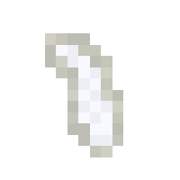
Crocodile teeth are items exclusively dropped by crocodiles. It can serve as both a collectible item and an ingredient for crafting Crocodile Armor using the Marine Workbench.
Crocodile Leather
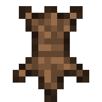
Crocodile leather are items exclusively dropped by crocodiles. It can serve as an ingredient for crafting Crocodile Armor using the Marine Workbench. It can also be used a regular Minecraft leather for things like crafting recipes and more.
Behavior
Crocodiles are the most dangerous freshwater predators. Unlike other mobs added, the crocodile will always target the player if they are within the crocodile's follow range which is 35 blocks. During the day, crocodiles will only slowly swim and follow players if they are submerged in water. Otherwise, they will just stay near the bottom of the riverbed, waiting around. If the crocodile is outside of water and on land during the day, it will ignore mostly ignore the player, as in it won't follow them actively, but it may still lunge at the player if they are close by.
During the night, crocodiles will occasionally surface out of the water and go on to land, where they will actually follow and attacks players.
Lunge
Crocodiles have the ability to lunge at players who are within an 8 block radius of the crocodile. The lunge is not exclusive to any particular situation (unless the crocodile was raised by the player, in which case it will never lunge unless provoke, more information on that can be found in the next section). Since the lunge is not exclusive, the crocodile can lunge at the player in any context, even if the player is on land during the day and the crocodile is in water, as long as the crocodile is close enough to the player. This lunge is quite fast, so it is important to be vigilant and get out of the crocodile's way when it lunges, otherwise it may just kill the player. When the crocodile lunges, it will emit a roar and particles of wind (and bubbles if the crocodile is in water) as it launches itself in the direction of the player. The crocodile will never lunge at players in creative or spectator mode.Below are the stats for the lunge:
- Attack Cooldown: 8 seconds
- Attack radius: 8 blocks
- Attack Type: Projectile (itself)
- Stops at:
- Players (Survival or Adventure)
- Solid Blocks
- Attack damage: 18 HP (9 hearts) (Players in survival or adventure mode)
- Projectile top distance: 10 blocks
- Projectile speed:
- In water: 10 blocks per second
- In air: 7 blocks per second
Life Cycles and Raising Crocodiles
Crocodile Egg (Item)
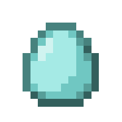
In order for the player to be able to raise crocodiles, they cannot use a water bucket due to their size. Instead, the player must kill an adult crocodile for a chance to get an item called the Crocodile Egg. The player can place this egg item onto the ground or in a body of water and wait for the egg to hatch.
Crocodile Egg (Entity)
The crocodile egg is the first phase of a crocodile's lifecycle. Like with every other baby/juvenile variants of the Blue Depths mobs, they do not spawn naturally, they can only exist if a player (or blocks like dispensers or droppers) places a Crocodile Egg (Item). These eggs have the potential to grow up and become a Crocodile Hatchling, the next phase in the life cycle of a crocodile. It looks like a simple white egg-like block. They will never despawn unless they are either killed by the player.
Unlike most other life-cycle mobs/entities from Blue Depths, the crocodile egg can only grow into Crocodile Hatchling through the passage of time. There are no items that can be thrown at the eggs to speed up their growth process. The eggs will take 13:20 minutes to hatch.
If the player wishes to stunt the growth of the egg, meaning they want to prevent the eggs from ever hatching, all the player has to do is drop coal near the egg. This effect is irreversible.
Below shows a table on how each method accelerates the growth of the crocodile egg:
| Method | Growth Progress | Amount Required for Near-Instant Growth |
|---|---|---|
| Natural Growth (Doing nothing) | Growth progresses normally | Not applicable |
| Coal | Stops growth (irreversible) | Not applicable |
The egg does not drop anything upon death. It will also never despawn.
Crocodile Hatchling
The crocodile hatchling is the second phase in a crocodile's lifecycle. Like the Crocodile Egg, crocodile hatchlings do not spawn naturally, they can only be obtained when a crocodile egg hatches. Crocodile hatchlings looks just like adult crocodiles, except they appear smaller. These have the potential to grow into mature crocodiles by simply waiting or giving it food to accelerate its growth. Crocodile hatchlings do not despawn like wild adult crocodiles do. Crocodile hatchlings are also completely passive towards players and will never attack even if they are hit.
For a crocodile hatchling to grow up to become an adult, the player has two options. The player can either wait a certain amount of time for the hatching to grow all by itself, or they can feed it food to speed up the growth process, by taking a certain amount of time out of the remaining time left to grow. Unlike with vanilla mobs, Blue Depth mobs will not eat if you "use" an item on them, instead you must throw/drop the item close to them. The total time it takes for it to grow is 16:40 minutes of real time. Due to this long wait, it is recommended to just feed the hatching food to accelerate its growth.
If the player wishes to stunt the growth of the crocodile hatchling, meaning they want to prevent it from ever growing, all the player has to do is drop beetroot near it. This effect is irreversible.
Below shows a table on how each method accelerates the growth of the hatchling:
| Method | Growth Progress | Amount Required for Near-Instant Growth |
|---|---|---|
| Natural Growth (Doing nothing) | Growth progresses normally | Not applicable |
| Bluegill (Item) | Removes 1:05 minutes from remaining time | 16 bluegill |
| Largemouth Bass (Item) | Removes 1:20 minutes from remaining time | 13 largemouth bass |
| Salmon (Item) | Removes 50 seconds from remaining time | 20 salmon |
| Beetroot | Stops growth (irreversible) | Not applicable |
Crocodile Hatchlings do not drop anything upon death. They will also never despawn naturally.
Player-raised Adult Crocodile
Once a hatchling becomes an adult crocodile, you are done with dealing with lifecycles. There is a difference between regular wild crocodile and player raised crocodile. It is important to know that these crocodiles do not actively attack or lunge at players, they will remain neutral towards the player. However, this neutrality can be broken and cause the crocodile to attack and lunge at players under two circumstances. The first being if the crocodile receives damage, if it does, it will growl which angry particles hovering over it's head. The second is a little more complicated.
The crocodile can become aggressive towards players similarly to how bull sharks become aggressive, that is if players stick too close to the crocodile for too long. But the restrictions are more tight and random. If a player stays within a 2 block radius of the crocodile, it will have an timer of it becoming aggressive. If the player stays within 2 blocks for about 6 seconds, there is a 35% chance that the crocodile will immediately become aggressive, growling and emitting angry particles. There is no warning like with the bull shark, it will just become aggressive in that moment. However, if the 35% chance fails, the timer will be reset. If the player moves out of the 2 block radius, the timer will stop counting and decrement until it reaches zero, and won't increment again if a player enters the radius again.
Other than that, player-raised crocodiles have the same stats and behavior as regular crocodile.
Crocodile Armor
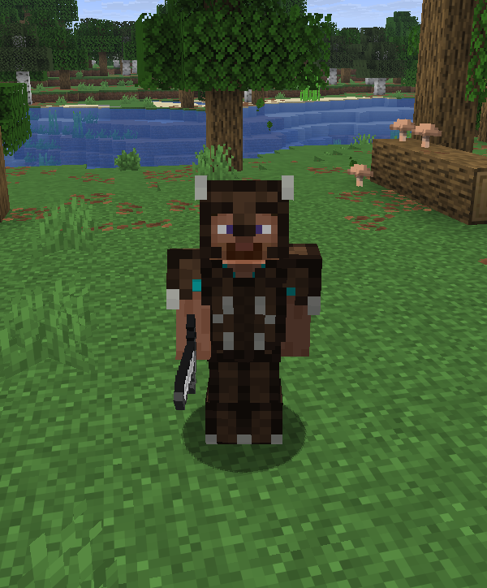
Crocodile Armor is a special kind of armor that can only be crafted using the Marine Workbench. The materials needed to craft this armor are Crocodile Teeth and Crocodile Leather. This armor sits between armor like gold/chainmail armor and iron amor in terms of protection. What makes this armor particularly special is the fact that each armor piece has Thorns II applied to it, along with higher durability than armor like iron armor to better handle the added durability weakness that Thorns applies.
Crafting
As stated before, crocodile armor can only be crafted using the Marine Workbench, using a regular crafting table won't work. For more information on the workbench click here. Below shows a table showing what each armor piece requires:
| Armor Piece | Crocodile Leather Needed | Crocodile Teeth Needed |
|---|---|---|
| Helmet | 3 | 2 |
| Chestplate | 6 | 2 |
| Leggings | 5 | 2 |
| Boots | 2 | 2 |
| Whole Set | 16 | 8 |
Once you have all the ingredients needed, you must place the items in this pattern INSIDE the Marine Workbench to craft each armor piece:
Crocodile Helmet
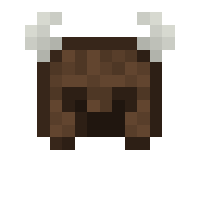
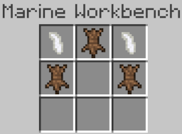
Crocodile Chestplate
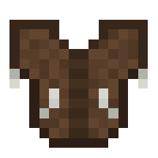
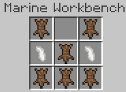
Crocodile Leggings
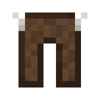
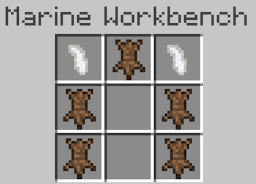
Crocodile Boots
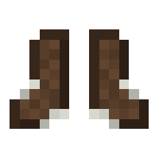
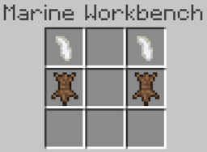
Armor Stats
Below shows the statistics for each piece of crocodile armor:
| Armor Piece | Armor | Armor toughness | Durability | Enchantability | Knockback Resistance | Default Enchantment(s) |
|---|---|---|---|---|---|---|
| Helmet | 2 | 0 | 350 | 9 | 0 | Thorns II |
| Chestplate | 5 | 0 | 420 | 9 | 0 | Thorns II |
| Leggings | 5 | 0 | 400 | 9 | 0 | Thorns II |
| Boots | 1 | 0 | 325 | 9 | 0 | Thorns II |
History
Development History
| Datapack Version | Addition/Change |
|---|---|
| 1.2.0 (Roaring Rivers Part 2: Shocking Snap) |
|